第十四讲 递推方法
递推方法是人们从开始认识数量关系时就很自然地产生的一种推理思想.例如自然数中最小的数是1，比1大1的数是2，接下来比2大1的数是3，…由此得到了自然数数列：1，2，3，4，5，….在这里实际上就有了一个递推公式，假设第n个数为an，则
an+1=an+1
即由自然数中第n个数加上1，就是第n+1个数。由此可得
an＋2=an＋1＋1，
这样就可以得到自然数数列中任何一个数
再看一个例子：
例1 平面上5条直线最多能把圆的内部分成几部分？平面上100条直线最多能把圆的内部分成几部分？
解：
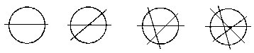
假设用ak表示k条直线最多能把圆的内部分成的部分数.这里k＝0，1，2，….如图可见。
a0＝1
a1=a0+1＝2
a2=a1＋2=4
a3=a2＋3=7
a4=a3+4＝11
…
归纳出递推公式an＋1＝an+n. （1）
即画第n＋1条直线时，最多增加n部分.原因是这样的：第一条直线最多把圆分成两部分，故a1＝2.当画第二条直线时要想把圆内部分割的部分尽可能多，就应和第一条直线在圆内相交，交点把第二条直线在圆内部分分成两条线段，而每条线段又把原来的一个区域划分成两个区域，因而增加的区域数是2，正好等于第二条直线的序号.同理，当画第三条直线时，要想把圆内部分割的部分数尽可能多，它就应和前两条直线在圆内各有一个交点.两个交点把第三条线在圆内部分成三条线段.而每条线段又把原来一个区域划分成两个区域.因而增加的区域部分数是3，正好等于第三条直线的序号，….这个道理适用于任意多条直线的情形.所以递推公式（1）是正确的.这样就易求得5条直线最多把圆内分成：
a5=a4+5＝11=5＝16（部分）。
要想求出100条直线最多能把圆内分成多少区域，不能直接用上面公式了，可把上面的递推公式变形：
∵an=an-1+n=nn-2＋（n-1）＋n
=an-3+（n-2）＋（n-n）+n
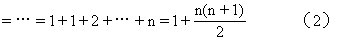
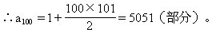
公式（2）也称为数列1，2，4，7，11，16，…的通项公式.
一般来说，如果一个与自然数有关的数列中的任一项an可以由它前面的k（≤n-1）项经过运算或其他方法表示出来，我们就称相邻项之间有递归关系，并称这个数列为递归数列.如果这种推算方法能用公式表示出来，就称这种公式为递推公式或递推关系式.通过寻求递归关系来解决问题的方法就称为递推方法.许多与自然数有关的数学问题都常常具有递推关系，可以用递推公式来表达它的数量关系.如何寻求这个递推公式是解决这类问题的关键之一，常用的方法是“退”到问题最简单情况开始观察.逐步归纳并猜想一般的速推公式.在小学生阶段，我们仅要求学生能拨开问题的一些表面现象由简到繁地归纳出问题的递推公式就行了，不要求严格证明.当然能证明更好.所谓证明，就是要严格推出你建立的关系式适合所有的n，有时，仅仅在前面几项成立的关系式，不一定当n较大时也成立。
例2 平面上10个两两相交的圆最多能将平面分割成多少个区域？平面上1993个圆最多能将平面分割成多少个区域？
解：设平面上k个圆最多能将平面分割成ak部分.我们先“退”到最简单的情形.如图可见
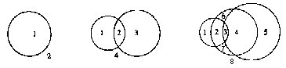
a1=2，a2=4＝2＋2×1，
a3＝8=4＋2×2，
a4=14=8+2×3，
…
an=an-1+2（n-1）.（3）
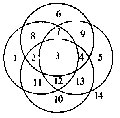
（3）是这个问题的递推公式.再把它变形为当n较大时也能方便求出结果的公式：
an＝an-1+2（n-1）
＝an-2+2[（n-2）+（n-1）]
＝an-3＋2[（n-3）+（n-2）+（n-1）]
＝…=a1+2（1+2+3+…+n-2+n-1）
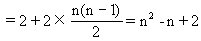
∴a10=102-10+2=92（个），
a1993=19932-1993＋2=3970058（个）。
关于这个递推公式成立的正确性分析与例1完全类似.比如，第一个圆显然将平面分为两个区域；当画第二个圆时，应与原来的一个圆有两个交点，即被第一个圆截成两段弧，而每一段弧将原来的每一个区域分成两个区域，故区域数增加了2，即增加了原来圆的个数的2倍；当画第三个圆时，应与原来的两个圆共有4个交点，圆弧被截成4段，而每段弧又将原来的每个区域分成两个区域，所以区域增加了4，即原来圆的个数的2倍，…，同理类推，说明递推公式应该是
an=an-1+2（n-1）。
例3 在一个圆周上按下面规则标上一些数：第一次先把圆周二等分，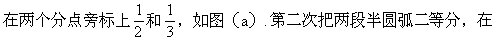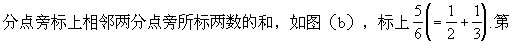
三次把4段圆弧分别二等分，并在4个分点旁边标上两个相邻分点旁所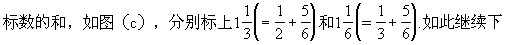
去，当第八次标完数以后，圆周上所有已标的数的和是多少？
解：
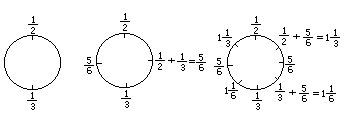
解：我们一般地设第一次所标的两数分别为a、b，用Sk表示第k次标完后各分点所标数的和.如图可见
S1＝a＋b，S2＝S1+2S1＝3S1＝3（a＋b）。
原因是这样的：S2是两类分点旁的标数和，一类是原来分点所标数的和S1，另一类是新增分点所标数的和，它正好是由原来各分点所标的数向左加一次，又向右加一次的和，故新增分点旁所标数的和恰好是原来所有数之和的2倍2S1，因此有
S2=S1＋2S1=3S1，同理类推
S3=S2+2S2＝3S2=32S1，
S4＝32S1＋2×32S1＝32S1，
…
Sn=3n-1S1=3n-1（a＋b） （4）
（4）式为递推公式：Sn＝3Sn-1在S1=a＋b时已解出的表达式.所谓解出，即Sn直接依赖于n与S1而计算出.不再是Sn依赖于Sn-1，Sn-1又依赖于Sn-2…这样的形式。
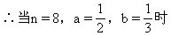
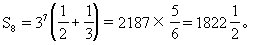
例4 假设刚出生的雌雄一对小兔过两个月就能生下雌雄一对小兔，此后每月生下一对小兔.如果养了初生的一对小兔，问满一年时共可得多少对兔子？
解：我们先退到开始的简单情况来推算，从中归纳出递推关系.如图：
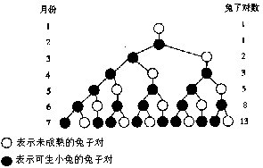
第一个月：只有1对小兔。
第二个月：一对小兔长成一对大兔，但尚不会生殖.仍只有一对兔子。
第三个月：这对大兔生了一对小兔，这时共2对兔子。
第四个月：大兔又生了一对小兔，而上月出生的小兔正在长大，这时共3对兔子。
第五个月：这时已有两对大兔可以生殖（原来的大兔和第三个月出生的小兔），于是生了两对小兔，这时共有5对兔子。
…
把推算的结果列成一张表
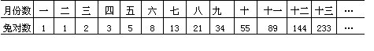
由表中可见满一年时可得144对兔子。
如果要算的时间长，这种方法就有困难了，现在我们来找递推关系。
用｛un｝表示第n个月时的兔子对数，则
｛un｝：1，1，2，3，5，8，13，21，34，…。
容易发现递推公式是
un=un-1+un-2。
现在说明这个递推公式是正确的.因为第n个月时的兔子对分两类，一类是第n-1个月时的兔子对，另一类是当月新生的兔子对，而这些小兔对数恰好是第n-2个月时的兔子对数un-2。
有了上面的递推公式就可以写出｛un｝的第12项为144对.这正是本题要求的满一年时的小兔总对数。数列｛un｝称为斐波那契数列（Fibonacci，1170～1250，是意大利数学家）.由于数列｛un｝具有许多重要的奇特性质.因而受到数学家们的极大关注，并把数列｛un｝取名为斐波那契数列.
例5 传说在印度的佛教圣地贝拿勒斯圣庙里安放着个一个黄铜板，板上插着三根宝石针，在第一根宝石针上，从下到上穿着由大到小的64片中心有孔的金片.每天都有一个值班僧侣按下面规则移动金片：把金片从第一根宝石针移到其余的某根宝石针上.要求一次只能移动一片，而且小片永远要放在大片的上面.当时传说当64片金片都按上面的规则从第一根宝石针移到另一根宝石针上时，世界将在一声霹雳中毁灭.所以有人戏称这个问题叫“世界末日”问题（也称为“Hanoi塔”问题），当然，移金片和世界毁灭并无联系，这只是一个传说而已，但说明这是一个需要移动很多很多次才能办到的事情.解这个问题的方法在算法分析中也常用到.究竟按上述规则移动完成64片金片需要移动多少次呢？解：设有n片金片，把从第一片金片至第k片金片按题目要求由第I根宝石针移到另一根宝石针共需移动ak次。
先对4片金片的简单情形用下列的几组图来表示移动过程中的各种状态，并计数，归纳出递归关系式。
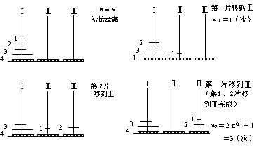
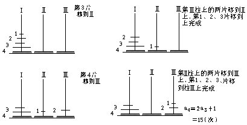
这节的前几个例子都是“退”到简单的特殊情况来归纳出一般规律.在这个例子里，我们将先用一般推理得出递推公式，再以n=64代入，便可解决我们这个例题.这种从一般到特殊来解决问题的方法也是数学上的一种常用方法。
我们可以这样来想：为了移动第n片到第Ⅲ根宝石针上，我们必须先把它上面的n-1片按题目的规则采用某种程序移到第Ⅱ根宝石针上，这需要移动an-1次.然后才能把最下面第n片（最大的），称到第Ⅲ根宝石针上.最后再经过an-1次才能把第Ⅱ根宝石针上的n-1片金片按上面规则采用同样程序移到第Ⅲ根宝石针上.因此把n片金片按题中的规则全部移到另一根宝石针上共应移
an=2an-1+1（次）. （5）
这就是递推公式。为了求得n=64时a64的值，我们当然不能一次次地由a1=1，a2=3，a3=7，…直到算出a64.现在我们设法把递推公式（5）变形为可以直接计算a64的形式。
∵an=2an-1+1=2（2an-2＋1）+1=22an-2+2＋1
=22（2an-3+1）+2+1＝23an-3＋22+21+1
=…
＝2n-1a1＋2n-2+2n-3+…+2＋1
=1＋2＋22+…+2n-2＋2n-1，
∴an＝2an-an
=2（1+2+22＋…+2n-1）-（1+2+…+2n-1）
=2n-1，
∴a64＝264-1。
a64是一个非常大的数.如果按每移动一片次需一秒钟算，把64片金片从一根宝石针移到另一根宝石针上大约需要5800亿年。